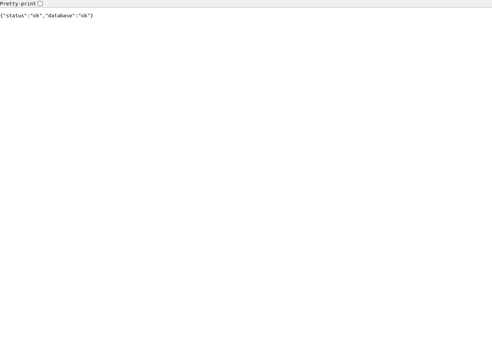
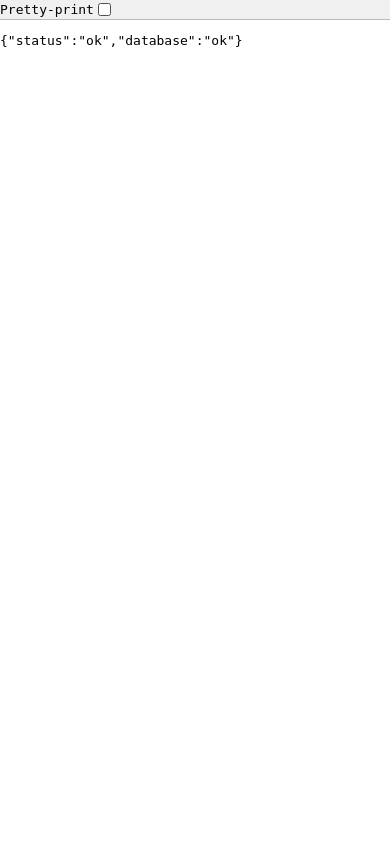

Vitrine — preuve de valeur
Parcours de référence rejoués en cadence (une action par seconde), générés depuis journeys/.
Le service répond et sa base est joignable socle · fr
desktop

On ouvre l'adresse de santé du service.
mobile

On ouvre l'adresse de santé du service.